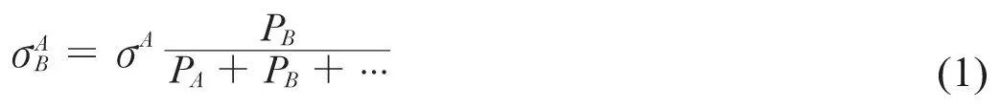
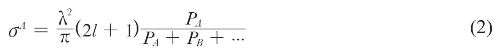
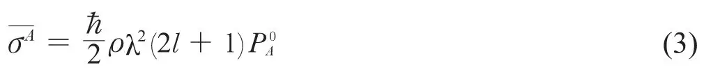
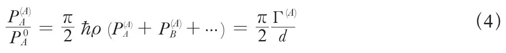

英文
英文玻尔等
编者按
这篇寄给《自然》的通讯最令人感兴趣的是他的作者：哥本哈根的尼尔斯·玻尔，他是众所周知的量子力学之父，鲁道夫·佩尔斯为哥本哈根的研究生，最后移居英国，是应用热扩散过程来分离同位素方法的设计者，乔治·普拉切克是上述两位作者的亲密同事。他们的这篇文章的要点是强调玻尔的关于核碰撞的观点，他们认为，原子核在发生碰撞时首先形成“复合核”，这种复合核可以通过多种方式分裂。 英文
通常认为，由碰撞或者辐射引发的核反应在很大程度上分为两步发生：首先形成一个处于较高激发态的复合体系，然后通过衰变或辐射跃迁到较低的激发态。我们用A，B，……表示反应中可能出现的两类不同的产物，并通过发射出的粒子或光子及残余核的性质、内在量子态、自旋方向及轨道角动量来决定。此外，我们定义PA，PB，……为单位时间内由复合态分别跃迁到A，B，……态上的概率。 英文
显然，A→B反应的有效截面为：

式中σA为从A状态发生碰撞产生一个复合核的有效截面。这个公式表示，我们讨论的能量是这个复合核能够真正存在的能量，也就是说，我们或者有一个能量连续的区域，或者如果能级是分立的，我们将得到最适合的共振态。而且，假定所有可能发生的反应，包括散射，都是通过复合状态进行的，特别忽略了被称作“势散射”的影响，在“势散射”中，粒子的轨迹发生偏斜，因而未能与原始原子核中的某个粒子发生近距离的相互作用。 英文
基于这些假定，根据波动力学[1]普适的守恒定理给出以下关系式：

式中λ为入射粒子的波长，l为其角动量。 英文
假如人们应用色散公式于一个共振能级的中心而且忽略了所有其他能级的影响的话，对于分立的能级，由式（1）和式（2）给出的有效截面与通常色散公式得到的结果相同。在这种情况下，我们将为复合核中的每一个共振能级确定一个明确的量子态，同时它的特性，尤其是概率PA，PB，……并不依赖于通过什么类型的碰撞而形成，也就是说反应从阶段B或者C及其他碎片开始与从A开始得到的结果是一样的。 英文
然而，对于能量连续的情况来说，在复合核的寿命期内存在着很多不易区分能量的量子态，系统的实际状态就是多个量子态的叠加，系统的性质取决于它们的相位关系，因此取决于复合核的形成过程。 英文
如果我们考虑以下的公式，这种相关性就会变得非常明显：

对于在一个包含若干能级的区间中截面的平均值，它服从著名的细致平衡原理。式中 在这里表示复合核中能级（具有适当的角动量和对称性）的每单位能量上的密度，
在这里表示复合核中能级（具有适当的角动量和对称性）的每单位能量上的密度， 为A过程的统计平衡概率，因此引出一个由各自具有特有的统计权重的碎片A，B，……构成的复合状态的微正则系综。 英文
为A过程的统计平衡概率，因此引出一个由各自具有特有的统计权重的碎片A，B，……构成的复合状态的微正则系综。 英文
对于分立能级的情况，式（3）也可以直接由色散公式导出，在这种情况下我们可很容易的定义为对概率PA的单个能级上的简单的平均值。 英文
对于能量连续的情况，式（3）和式（2）必须一致，因为有效截面在一个包含多个能级的能量区间中的变化并不明显。因此，比较式（2）和式（3），我们会得出：

其中，在式（1）中的概率上添加上标A是为了明确地表示其与形成模式的相关性，Γ(A)是对应复合态的总能级宽度， 表示能级的平均间距。在能量连续的体系中，当Γ(A)≫d时，在不改变原子核状态的条件下再次发射入射粒子的概率
表示能级的平均间距。在能量连续的体系中，当Γ(A)≫d时，在不改变原子核状态的条件下再次发射入射粒子的概率 会比在以其他方式形成的复合核中发生同样过程的概率大得多。 英文
会比在以其他方式形成的复合核中发生同样过程的概率大得多。 英文
前面的论述针对的都是总体上的特征，要进一步考量核激发机制需要讨论当A=B时， 对复合核中模式A的依赖性。 英文
对复合核中模式A的依赖性。 英文
人们可以设想一些这种依赖性肯定存在的情况，实际上，如果一个很大的系统被一个快速粒子撞击，激发的能量也许只局限于碰撞点附近，快速粒子逃离该区域的可能性比到达统计平衡时的概率大。而且，如果这个系统具有松散耦合的振动模式，它们当中一个被激发，比如通过辐射，很难导致一个差异很大的普通模式组成的振动态被激发，即使这种状态在统计平衡中占有很大的优势。 英文
然而，在实际的原子核中，我们不能用松散耦合的振动模式来描述运动，也不能期望激发能的局域化对中等能量的核反应的重要性。如果我们假定没有其他的特殊情况可以导致对A的依赖性，那么除去A=B的情况以外，理想化地假定所有都等于 是合理的，即使是在能量连续的体系中，正如我们在式（4）看到的那样，该状态必然更有利于产生入射粒子的再发射过程。 英文
是合理的，即使是在能量连续的体系中，正如我们在式（4）看到的那样，该状态必然更有利于产生入射粒子的再发射过程。 英文
在能量连续体系中的一个典型反应是重元素原子的光电效应，由17毫伏的γ射线引发。博特和根特纳在最初的实验中发现，不同元素的有效截面明显不同，但是他们后来的研究[2]又表明这种不同可以用残余核子的放射性差异来解释，而且所有重元素在光电效应中的有效截面均为5×10－26平方厘米的量级。 英文
在前面基于式（1）和（2）的讨论中，由于没有清楚地认识到和之间的差别，我们发现要解析这种大小的光电效应的有效截面是有困难的。事实上，如果人们估算中子逃逸的概率PB约为每秒1017，那么PA应为每秒1015，但如果认为也具有同样的数值，那就太大了，因为它显然必须远远小于整个辐射的概率，整个辐射的概率约为1015，其中包括向基态以及更多其他最终能级的跃迁过程。 英文
然而，我们现在得出，在本文P(A)要远大于，因为在高激发态中能级间距的数量级大约为1电子伏，但是对于上面的PB值得到的能级宽度大约为100电子伏。从式（4），或者更直接地从式（3）中看出，的合理值只有每秒1013左右。 英文
（胡雪兰 翻译；王乃彦 审稿）